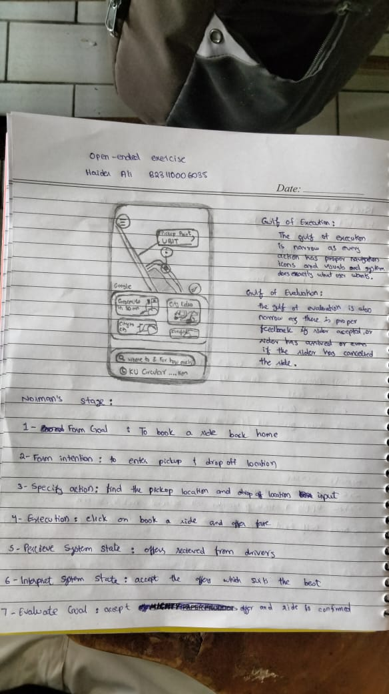

HCI Fundamentals
Human–Computer Interaction (HCI) integrates principles from Cognitive Psychology, Visual Design, and Computer Science to analyze the relationship between users and digital systems.
These are my notes and understanding of lectures from week 1-3.
Human–Computer Interaction (HCI) integrates principles from Cognitive Psychology, Visual Design, and Computer Science to analyze the relationship between users and digital systems.
UI (User Interface) is dedicated to the visual styling, aesthetics, and presentation of a product.
UX (User Experience) encompasses the holistic journey, focusing on how the product feels, its efficiency, and the user's overall satisfaction.
The Automatic Syringe incident highlights how minor choices in interface layout can yield critical outcomes. Specifically, the implementation of numeric keypads resulted in severe medical errors caused by erroneous keystrokes.
Since initial interface designs are rarely flawless, an iterative approach is vital. Preliminary prototypes should be disposable and flexible; employing rapid prototyping methods like paper sketching and low-fidelity mock-ups allows designers to validate concepts swiftly prior to engineering.
The Gulf of Execution is the disconnect between a user's intent and the capabilities provided by the system. Conversely, the Gulf of Evaluation is the difficulty a user faces in interpreting the system's state or feedback.
Breakdown of the NayaPay interface using Norman's 7-stage model and Gulf Of Execution and Gulf of Evaluation
